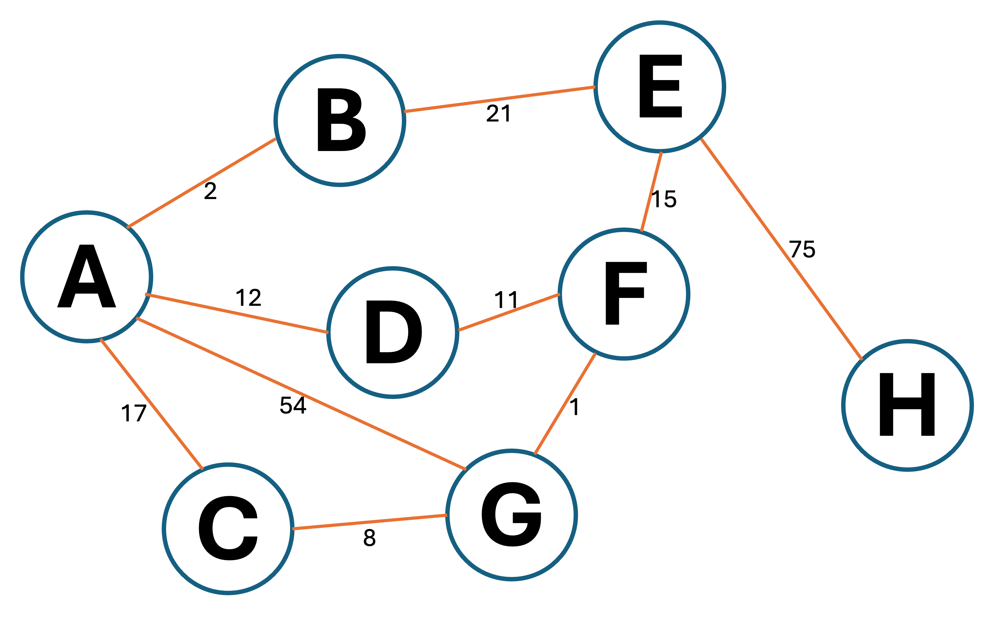

A graph is an abstract data type which is used to model complex relationships between nodes.
A graph is an abstract data type which is used to model complex relationships between nodes.
Nodes can be connected to other nodes by edges. These edges can have labels called weights.
Diagram 1 shows a graph with 8 nodes, A to H, which represent routers in a network.
The weights represent the time taken for data to travel between the routers (in milliseconds).
 Diagram 1
Diagram 1

The graph in Diagram 1 is an example of an undirected graph: one where the edges are two-way. If edges only go one way, the graph is called a directed graph.
 What is the fastest path from node A to node G in the graph in Diagram 1?
What is the fastest path from node A to node G in the graph in Diagram 1?
There are four possible paths that data can take:
• AG, which takes 54ms
• ACG, which takes 25ms
• ADFG, which takes 24ms
• ABEFG, which takes 39ms
Therefore, the fastest path is ADFG.